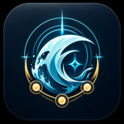

I own these characters. What team should I use?
Mark your Resonators and weapons, then compare practical Wuthering Waves team suggestions using owned characters instead of only perfect premium examples.
Wuthering Waves team helper
WaveKit helps you mark your Resonators and weapons, then turns your account into clear team paths: strongest reviewed teams first, sensible alternatives included, and build notes that explain why each slot works.
WaveKit starts with reviewed team combinations, then checks your ownership, Resonance Chains, weapons, roles, and known teammate compatibility. The strongest complete teams appear when you own them; otherwise it looks for compatible replacements and clearly marks choices that need more testing.
Your account
Your roster, saved teams, and upgrade plans in one private overview. Everything works locally and syncs automatically when you sign in.
Resonator guides
The full character guide area is separate from the team helper, so you can browse builds, weapons, Echo notes, and team direction without fighting a scrollable panel.
Banner watch
Current and upcoming featured Resonators, their signature weapons, and a quick route into each guide.
Team helper
Tap your Resonators, optionally add weapons, and WaveKit saves each change automatically while it builds teams around your strongest damage dealers.
Tap each Resonator once to mark RC0 owned. Rover is pinned first, and every card can open its full guide. Use the RC menu or + and - for Resonance Chains. Weapons are optional, but make build readiness more accurate.
Mark signature or strong weapons you own, then set R1-R5 for any refinements. If you skip this, teams still work; the helper will use safer generic build advice. Upcoming weapons stay locked until release.
Suggestions
The helper ranks teams by role coverage, known character synergy, third-slot safety, and whether your owned weapons make the main DPS easier to build.
Quick answers
WaveKit is built for players searching for a WuWa team builder, Wuthering Waves team helper, beginner team advice, or a practical way to check which Resonators can work together.
Mark your Resonators and weapons, then compare practical Wuthering Waves team suggestions using owned characters instead of only perfect premium examples.
WaveKit clearly marks real healers, defensive supports, recommended teams, and less-tested alternatives so newer players know what to expect.
Character pages keep build direction readable, with best weapons, alternate weapons, Echo cost notes, Sonata effects, and team role context.
Player feedback
If a team looks wrong, a weapon is missing, or a build note feels confusing, send it through. WaveKit is meant to improve with real player testing.
Join the WaveKit Discord for quick feedback, tester notes, and team suggestion discussion.
Phone and desktop install
WaveKit includes web-app support for installable browsers. On iPhone and iPad, Safari is the most reliable Home Screen path. On supported Android and desktop Chrome browsers, WaveKit can be installed from the browser menu or install prompt.

WaveKit status
Version 3.5 guidance was checked on July 17. WaveKit is an unofficial fan helper and marks uncertain recommendations carefully instead of presenting every answer as final.
Yangyang: Xuanling is live. Suisui remains guide-only until July 31.
Patch-sensitive teams are marked while player reports and public data are reviewed.
Keep it on this device, or choose account sync when you want it.
WaveKit is an unofficial fan project. Wuthering Waves belongs to Kuro Games.